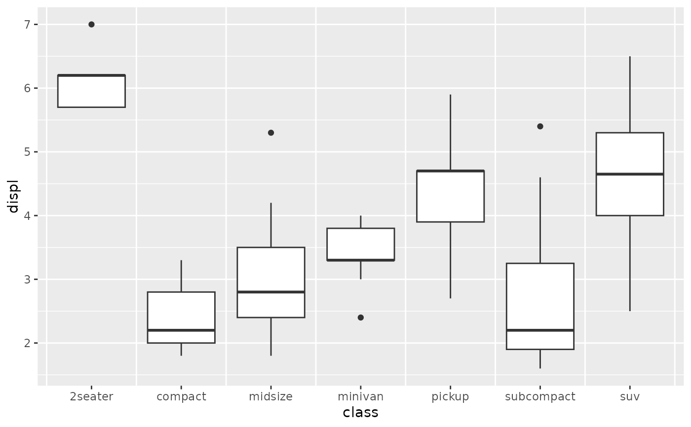
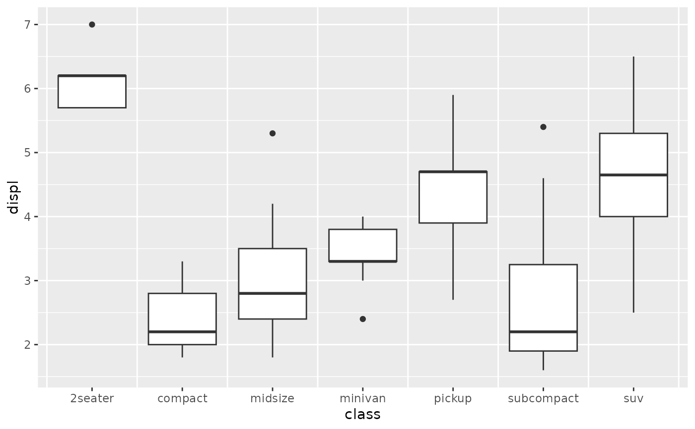

Vanilla grid guide
guide_grid.RdThis guide will draw a regular panel grid, with optional break adjustments.
Arguments
- breaks
The default major breaks specification inherited by the
x_breaksandy_breaksarguments.- minor_breaks
The default minor breaks specification inherited by the
x_minor_breaksandy_minor_breaksarguments.- x_breaks, y_breaks
Specifications for major breaks. Inherits from the
breaksargument. One of:- x_minor_breaks, y_minor_breaks
Specifications of minor breaks. Inherits from the
minor_breaksargument. One of:- ...
Currently not in use.
Value
A <Guide> ggproto object that can be given to the
guides() function, or set as the guide argument
in coord_guided().
See also
Other grid guide variants:
guide_grid_plus(),
guide_grid_zebra()
Examples
# A standard plot
p <- ggplot(mpg, aes(class, displ)) +
geom_boxplot()
# Giving a vector of x-breaks between discrete categories
p + coord_guided(guide = guide_grid(x_breaks = 0.5:7.5))
 # Identical to above, but passing a function for the x-breaks, and using
# the `guides()` interface.
p + coord_guided() +
guides(grid = guide_grid(x_breaks = breaks_between()))

# Identical to above, but passing a function for the x-breaks, and using
# the `guides()` interface.
p + coord_guided() +
guides(grid = guide_grid(x_breaks = breaks_between()))
